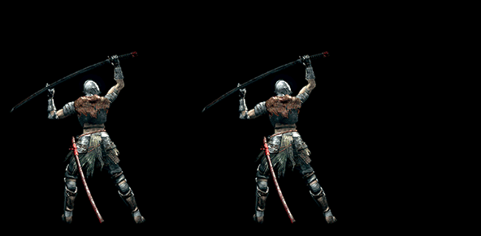

Lately Sony has been very receptive to some of its games, previously exclusive on the platform, being released for PC. Detroit: Become Human and Death Stranding are just a few examples, followed by rumors about The Last of Us Part II also coming out on the master racer.
Perhaps Sony's first-party cast on the PC could grow even further, as French Amazon has listed Horizon Zero Dawn for the platform. The game was published by Sony, however, the page is no longer live and reinforces some recent rumors that the game would come out to the master racer.
Nothing has been officially confirmed so far, but it is important to note that Horizon Zero Dawn celebrates 3 years of life next February 28. Will PC gamers have this gift announced for the platform in the coming days?
Back in the early days of cinema (at the turn of the 19th century to the 20th century), scholars in the field discovered that films could be created thanks to a composition of several images superimposed in sequence, something that would fool our brain, giving us the feeling of movement.
Throughout its more than one hundred years of history, this basic concept has been widely used in the film industry and adapted in several ways. Over time, it was established that the standard of 24 frames per second would be ideal for cinemas, and then new standards for DVD films emerged.
Later, this idea of frames per second was fundamental for the development of games. However, in games, for a long time it was agreed that the ideal would be the execution of 30 frames per second.
When we talk about running games, we automatically associate the issue of frames per second as a performance indicator. And, in fact, this feature is of paramount importance for the player to have a pleasant experience.
A frame rate below 30 fps causes discomfort and gives the feeling that the game is running in slow motion. Basically, a game that runs below that loses the feeling of fluidity and continuity, which leads the user to try a slideshow.
The question that 60 fps is better than 30 fps is very much related to the title in question. As a rule, this is very true, and when running a game at 60 frames per second, you can see significant improvements in the movement of characters and objects.
Basically, the increase in frame rate helps eliminate traces, ensuring a clear image. It is already more than proven that our brain is able to distinguish this difference, something that you can also see in the GIFs and videos below:
